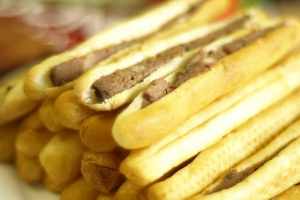

Hải Phòng - Ăn và Chơi
Cùng khám phá các địa điểm check-in và ăn vặt số 1 tại Hải Phòng
Bánh mì cay
Hiện nay tại Hải Phòng, món ăn vặt bánh mì cay đã trở nên quá đỗi thân quen với mọi người, đặc biệt là đối với các bạn học sinh, sinh viên. Sở dĩ được ưa chuộng như vậy là bởi vì bánh mỳ cay sở hữu đủ 3 tiêu chí “ngon, bổ, rẻ”. Ở bất cứ đâu các bạn cũng có thể tìm thấy bánh mỳ cay nhưng có lẽ hương vị “đúng chất” nhất vẫn là bánh mỳ tại đất cảng Hải Phòng. Nếu đã đến nơi đây thì bạn cũng đừng bỏ qua món ăn thú vị này.
Điểm đặc biệt của món ăn này là loại bate nhà làm rất mềm, thơm, ngon cùng với nước tương ớt cũng được làm thủ công có vị cay
nồng và thơm đặc trưng. Món ăn ngon nhất khi được thưởng thức ngay tại quán với vị nóng giòn tuy nhiên nếu bạn không ăn được
cay thì sẽ giảm bớt khá nhiều hương vị của món này.
Do cay và nóng nên món ăn thường được sử dụng kèm với một số loại đồ uống như sữa đậu nành, chè, trà sữa...

Nếu bạn không có điều kiện thưởng thức món ăn tại cửa hàng thì có thể mua đem về, sau đó hâm nóng lại bằng lò vi sóng hoặc
đặt lên chảo (không cho dầu ăn) rồi đặt trên bếp ga đun nóng khoảng 5' là có thể sử dụng ngay.
Bạn có thể tham khảo một số địa chỉ bán Bánh mì cay đúng tiêu chí “ngon, bổ, rẻ” sau:
- Tiệm bánh mì cay Bà Già: Đây được đánh giá là địa chỉ bán bánh mì cay chính hiệu, nổi tiếng nhất nhì tại Hải Phòng,
địa chỉ: 57 Lê Lợi, Máy Tơ, Ngô Quyền, Hải Phòng
- Bánh Mì Pate Cay - 28 Đinh Tiên Hoàng: Đây cũng là một quán được mở từ rất lâu tại Hải Phòng, địa chỉ:
28 Đinh Tiên Hoàng, P. Minh Khai, Quận Hồng Bàng, Hải Phòng
- Bánh mỳ cay Hai Bà Trưng: Trên đường Hai Bà Trưng (còn được gọi là đường Cát Dài) có khá nhiều cửa hàng ăn vặt trong đó
bánh mì cay chiếm tỷ lệ khá lớn.
Tại đây bạn sẽ được xem cô chủ nướng từng chiếc bánh và nếu thích bạn cũng có thể thử tay nghề của mình với nguyên liệu có
sẵn tại cửa hàng. Địa chỉ: Số 19 Hai Bà Trưng, Lê Chân, Hải Phòng...
Nổi bật

Tuyệt Tình Cốc
Địa điểm sống ảo hot nhất Vịnh Bắc Bộ sẽ đưa bạn lạc vào thế giới cổ trang.
Hỏi thế gian tình ái là chi...